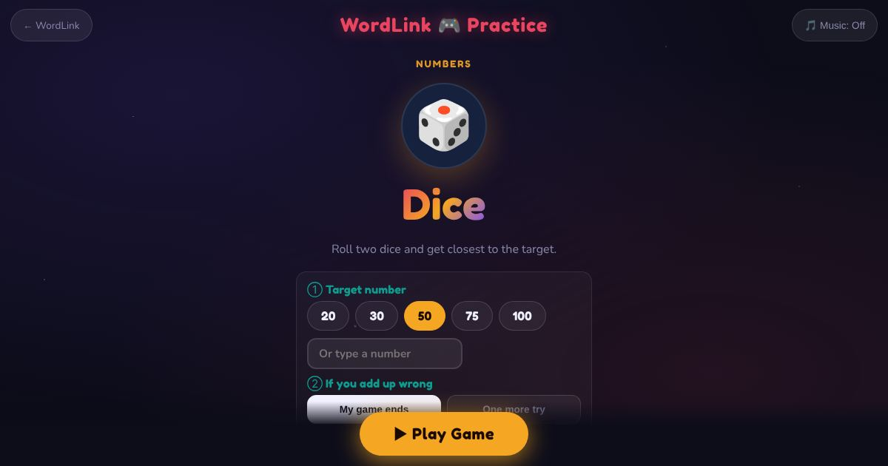

For teachers and tutors
About Dice
A dice game for adding and deciding. The learner rolls two dice, adds them to their score and types the new score, then chooses to roll again or stop. Going over the target means you are out. You choose the target number, and whether a wrong sum ends your game or gives one more try.

How to play
- Roll the dice and type your new score.
- Roll again, or stop.
- Get closest to the target without going over.
Play it as a class
Choose Dice in the Teacher Game. The whole class races to the target on the projector and the closest score wins.